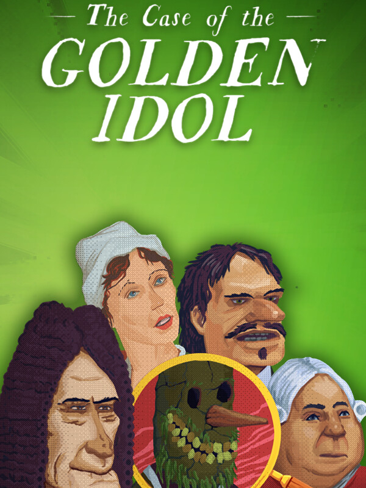

The Case of the Golden Idol
The Case of the Golden Idol
Details
|  | |
| Playtime | Not Played |
| Last Activity | Never |
| Added | 2023-08-11 0:29:08 |
| Modified | 2025-10-02 10:02:51 |
| Completion Status | Not Played |
| Library | Steam |
| Source | Steam |
| Platform | Macintosh PC (Linux) PC (Windows) |
| Release Date | 2022-10-13 |
| Community Score | 88 |
| Critic Score | 89 |
| User Score | |
| Genre | Adventure Indie Point-and-click Puzzle |
| Developer | Color Gray Games |
| Publisher | Netflix Playstack |
| Feature | Single Player |
| Links | Steam Official Website GOG Discord Subreddit Wikipedia Epic Google Play App Store (iPhone) App Store (iPad) Community Wiki Xbox Playstation Nintendo Twitch YouTube |
| Tag | 2D Adventure Atmospheric Choices Matter Conspiracy Crime Dark Detective Exploration Historical Interactive Fiction Investigation Mystery Narrative Pixel Graphics Point & Click Puzzle Singleplayer Story Rich Thriller |
Description


Step into the shoes of an 18th century detective and uncover the mystery behind twelve strange deaths spanning 50 years, all somehow connected.
Unmask the true killers in this sprawling narrative and discover their devious motives.


Observe closely and reconstruct each scene of death. Your skills of deduction can identify each suspect, motive and murder weapon.


Reveal the true nature of the mysterious Golden Idol and those who covet it. Follow the journey of a cursed aristocratic family as you untangle a web of deceit and villainy in your hunt for the truth behind this dark conspiracy.